1313 聯成 · 週K
待複核 · 尚未確認近期兩個約10元下探與約14.5元中峰分開；右側回升尚未觸中峰，需定位後列形成中。
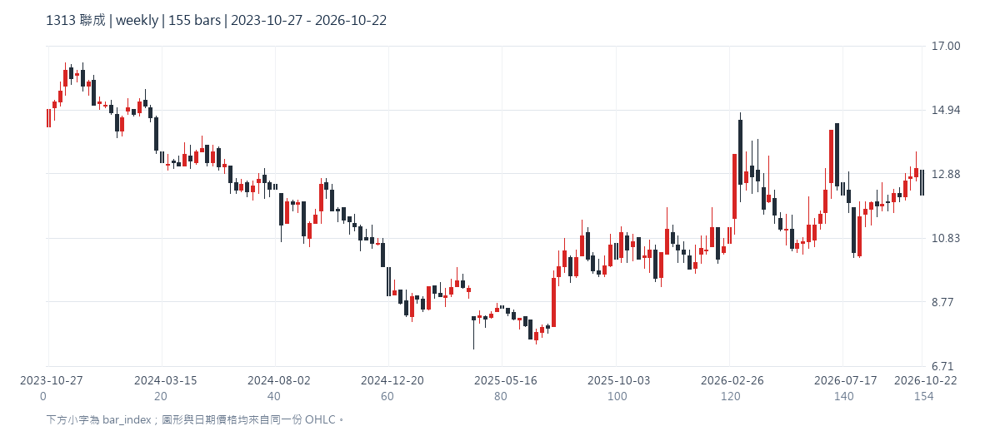
2063 世鎧精密 · 日K
待複核 · 尚未確認約23.5與23.2兩次下探之間有約24.9中峰；最新回升約24.2尚未碰頸線，需定位。
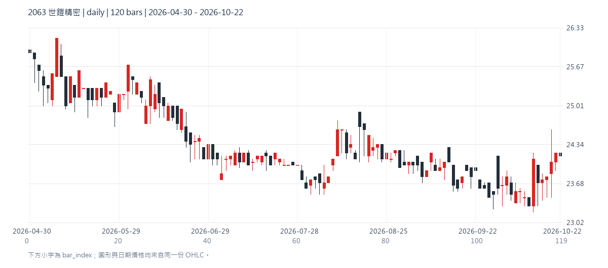
2105 正新 · 日K
待複核 · 尚未確認大尺度中段有多波；右緣局部小W可能已觸中峰，但需人工確認尺度，不列確認候選。
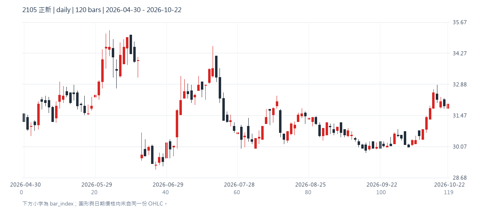
2204 中華 · 日K
待複核 · 尚未確認近期兩個主要下探約50與51元，中峰約55元；右側回升約53元尚未觸頸線，僅形成中。
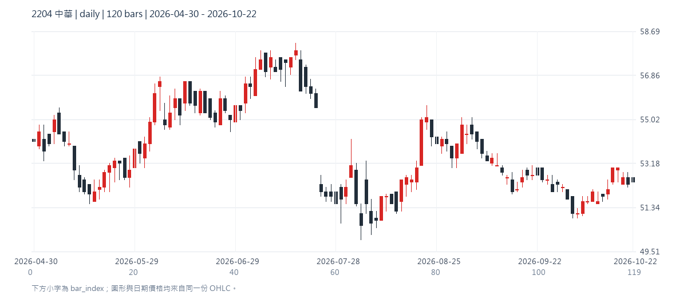
2597 潤弘 · 日K
待複核 · 尚未確認兩次低檔回測之間為多次高檔平台波動，整體輪廓是否足夠清楚需人工確認。
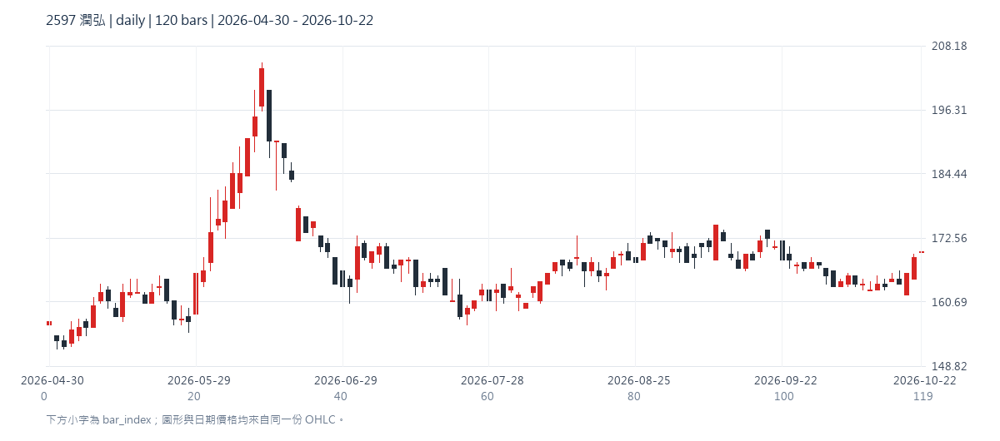
2633 台灣高鐵 · 日K
待複核 · 尚未確認近期兩谷約25.6與25.5元，約26.45中峰分開；最新回到中峰附近，待精確價位及觸線核對。
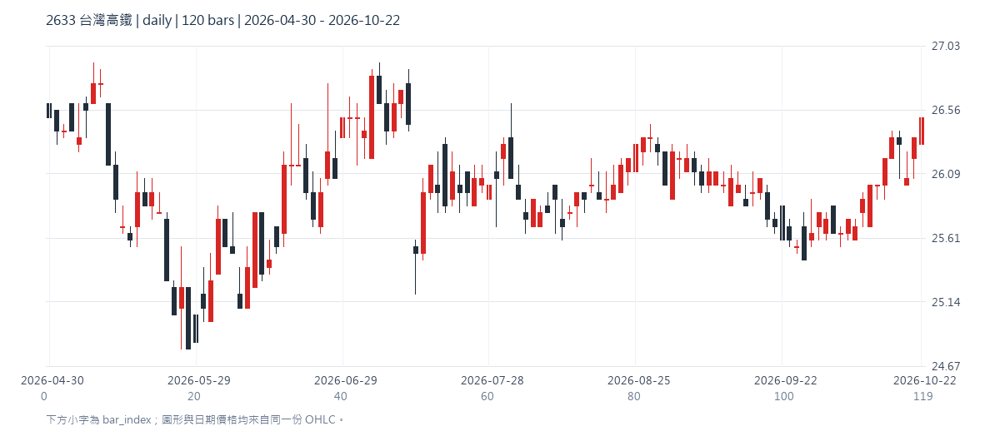
2939 永邑-KY · 週K
待複核 · 尚未確認第一谷約20與第二谷約18有高差，右側仍低於約27中峰；先待複核。
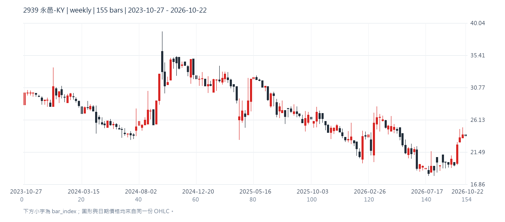
3032 偉訓 · 日K
待複核 · 尚未確認右緣兩谷約71元高度相近，中峰約83元；最新回升約74元尚未觸頸線，僅形成中。
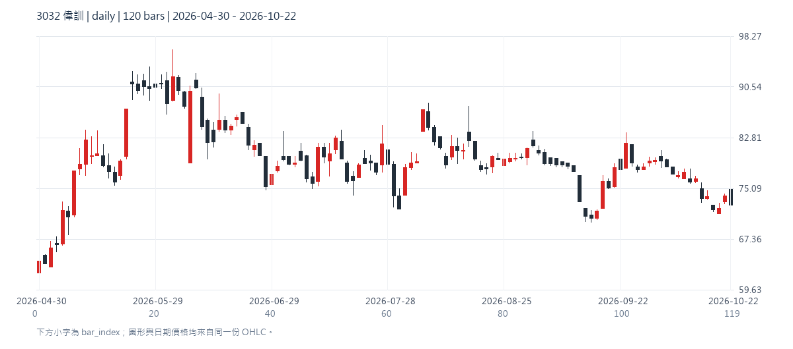
3234 光環 · 日K
待複核 · 尚未確認右側約165至190區間有多次來回，無法清楚分成單一中峰與兩個獨立谷；暫不確認。
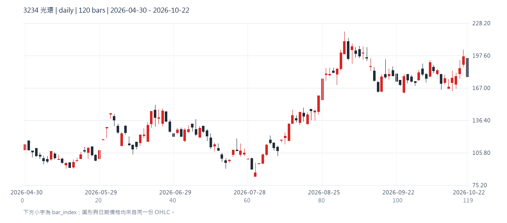
3325 旭品 · 日K
待複核 · 尚未確認第一谷為長段11附近平台，第二谷同區且最新上升，但平台與多次小下探使單一W輪廓不明；不直接確認。
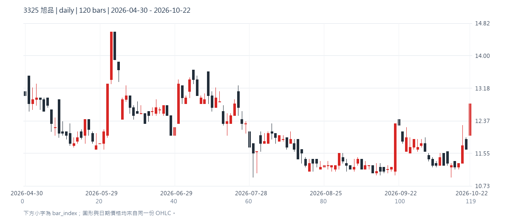
4568 科際精密 · 日K
待複核 · 尚未確認低檔有多次稀疏下探與跳價，中央及兩谷無法清楚分割；不以跳漲直接判W。
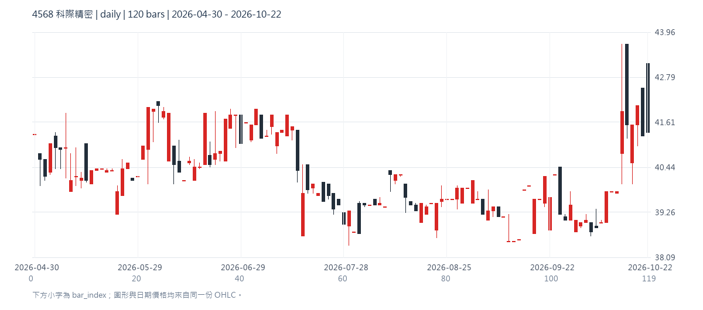
5202 力新 · 週K
待複核 · 尚未確認Two separated troughs around 11-12, middle peak around 18; latest near 15 remains below neckline. Exact anchors pending.
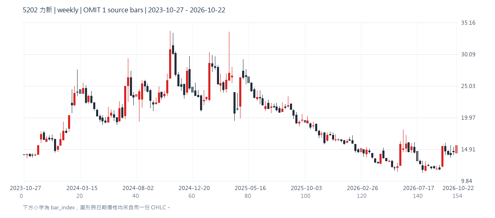
5601 台聯櫃 · 日K
待複核 · 尚未確認約28至29雙谷，中峰約31，右側近期上升超越；來源稀疏且突破時間待定位，未直接確認。
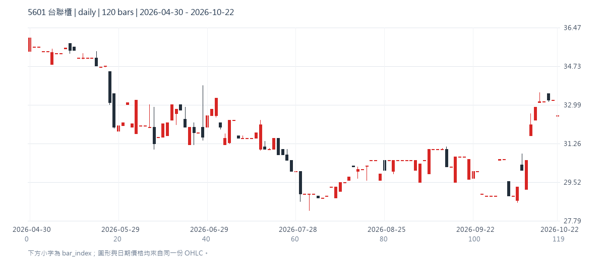
6245 立端 · 日K
待複核 · 尚未確認精確低點有7/20的72.4、7/30的73.2、9/3的76.1三次明顯下探；不能略過中間反彈拼成單一W，暫列人工複核。
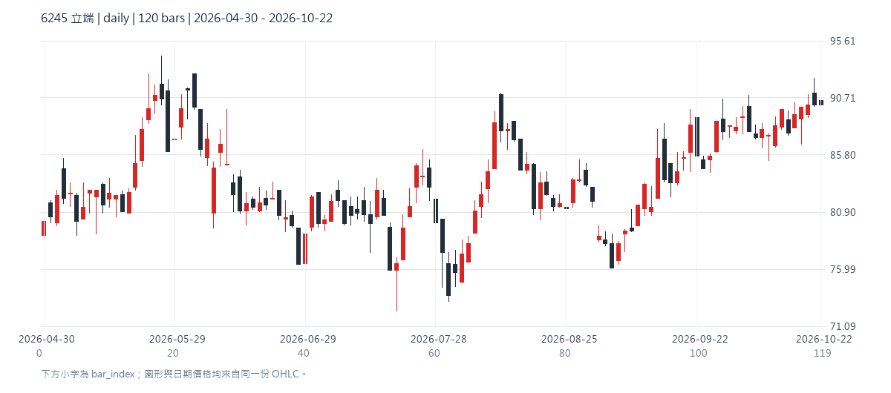
8272 全景軟體 · 日K
待複核 · 尚未確認約第80與108根兩次下探60附近，中間約第94根反彈至68附近；最新回升仍未明確碰到中峰高點，僅列形成中候選，待核對精確錨點。
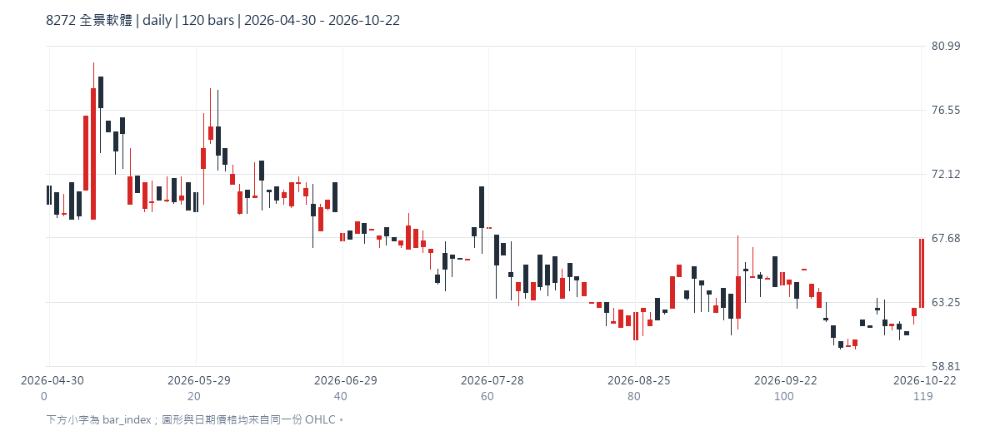